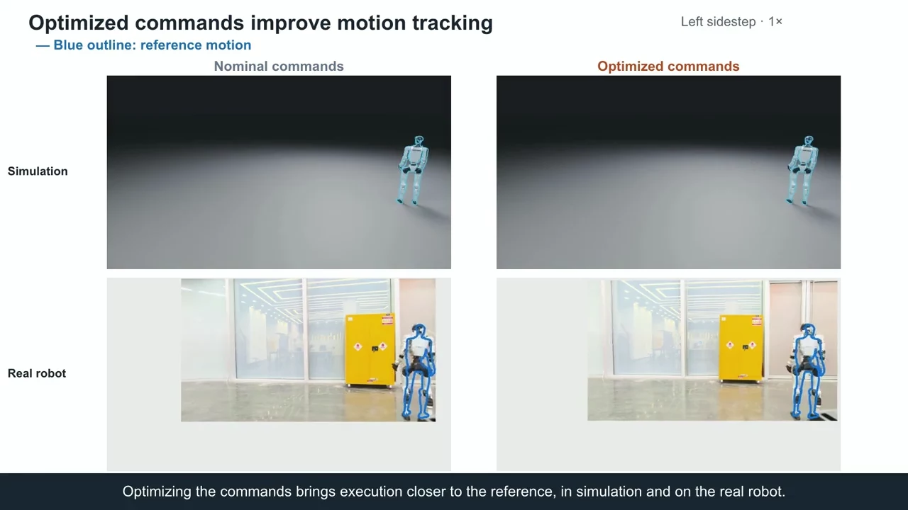
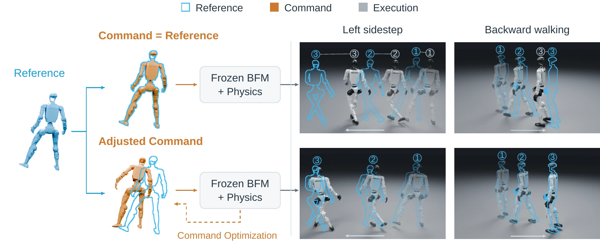
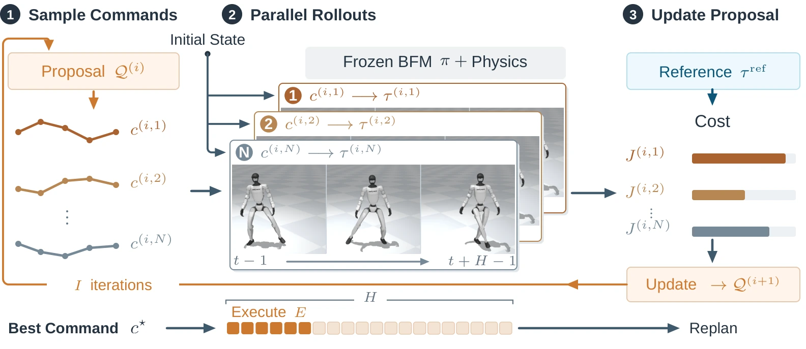
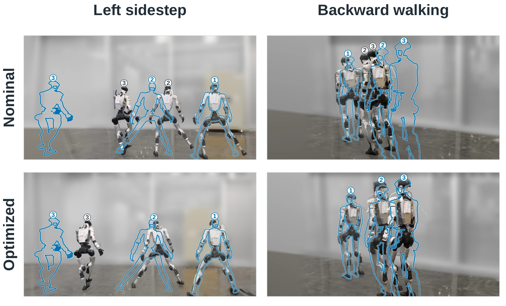
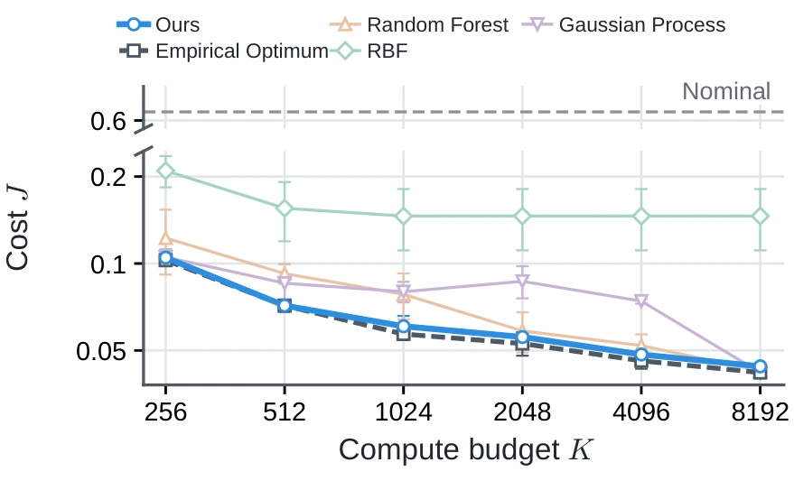

Test-Time Compute for Humanoid
Behavior Foundation Models

† Equal contribution · * Corresponding author

Project video3:59 · English narration & captionsChapters
Additional test-time compute can improve motion execution without retraining the humanoid behavior foundation model.
The Command–Execution Gap
Humanoid behavior foundation models (BFMs) can execute diverse motions, but loco-manipulation—walking and manipulating objects—demands high whole-body positional accuracy. Current BFMs show systematic deviations between desired and executed motions: the body drifts from its intended global position, or hands and feet miss intended contacts. This is the command–execution gap.

The desired motion need not be supplied directly as the command. Adapting the input to the specific BFM can bring execution closer to the same desired motion.
Test-Time Command Optimization
We introduce Test-Time Command Optimization (TTCO) to improve motion-tracking fidelity in existing humanoid BFMs without further training. TTCO adapts the input command to the specific BFM through sampling-based optimization in closed-loop simulations of the BFM and robot dynamics.

- Sample commands
- Simulate execution
- Refine the proposal
- Execute and replan
The simulator executes the first segment of the lowest-cost candidate, then replans. For policy learning, command labels are generated offline.
Motion-Tracking Fidelity across Three BFMs
We evaluate TTCO on 12,273 AMASS reference motions using HEFT, SONIC, and TWIST2. Compared with directly using the reference motion as the command, TTCO reduces mean global body-position error by 79–84% across these three BFMs in simulation.
Blue outlines mark the reference motion; all clips play at 1× speed.
Mean global body-position error
Simulation means, in centimeters. Lower is better. All bars use the same scale.
Measurements and hardware frames
These simulation results use compute budget ratio K = 640. Joint acceleration increases for all three BFMs, showing a trade-off between tracking precision and motion smoothness.
| BFM | Body-position error (cm) | Root-position error (cm) | Joint acceleration (rad/s²) |
|---|---|---|---|
| HEFT | 27.1 → 5.7 | 26.4 → 4.8 | 10.104 → 17.246 |
| SONIC | 61.5 → 12.7 | 60.9 → 11.7 | 8.832 → 11.999 |
| TWIST2 | 109.5 → 17.3 | 107.9 → 16.4 | 43.280 → 51.574 |

Blue outlines mark the reference motion.
Test-Time Compute Scaling
We analyze test-time compute scaling and derive an approximate compute-optimal allocation strategy. Fitted to limited measurements, our surrogate cost model captures the allocation trade-offs. The resulting strategy sustains performance gains as compute increases and generalizes across motions and BFMs.

Mean cost regret
Lower cost from K = 256 to 8192
Compute settings and evaluation
The model predicts costs for untested compute configurations from limited measurements. On SONIC and the motions used for fitting, its strategy reaches 4.02% mean regret across six budgets. Regret is the percentage by which cost exceeds the best measured cost at the same budget. Cost falls by 58.0% as K increases from 256 to 8192.
K = I × N × H / E, where I is search iterations, N is candidates per iteration, H is rollout steps, and E is steps executed before replanning. Applied unchanged to SONIC, HEFT, and TWIST2 on five new motions, the strategy reaches 4.60% mean regret across five budgets.
High-Level Policy Learning and Demonstration Reuse
Because of the command–execution gap, recorded robot trajectories may not directly serve as action labels. We apply TTCO offline to generate BFM-specific labels from those trajectories, without requiring the original teleoperation body-motion commands. These labels train high-level loco-manipulation policies and support demonstration reuse across BFMs.
SONIC demonstrations → SONIC execution
Original commands
TTCO commandsOurs
Recorded robot states
Demo clip not provided.The success rate is reported in the table below.
Separate evaluation rollouts · 1× speed
Real-robot success rates
We fine-tune GR00T N1.7 on SONIC demonstrations of four real-robot tasks. For each target BFM, observations and hand labels stay fixed while body-action labels change. Each task and label source is evaluated over 60 rollouts. Values are percentages.
| Task | Original | TTCO | State |
|---|---|---|---|
| Cup in basket | 55.0 | 55.0 | 0.0 |
| Parcel bag on shelf | 83.3 | 91.7 | 10.0 |
| Basket on shelf | 53.3 | 50.0 | 0.0 |
| Bottle in drawer | 50.0 | 60.0 | 0.0 |
| Mean | 60.4 | 64.2 | 2.5 |
Policies trained on TTCO labels reach 64.2% mean success with SONIC, compared with 60.4% for original-command labels and 2.5% for robot-state labels.